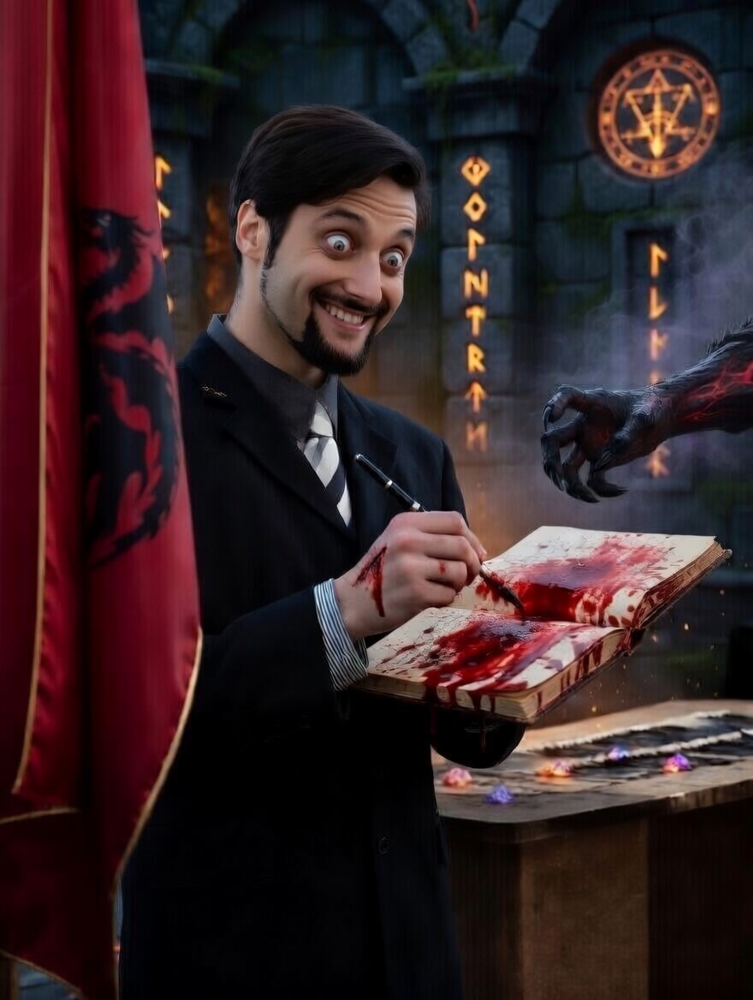
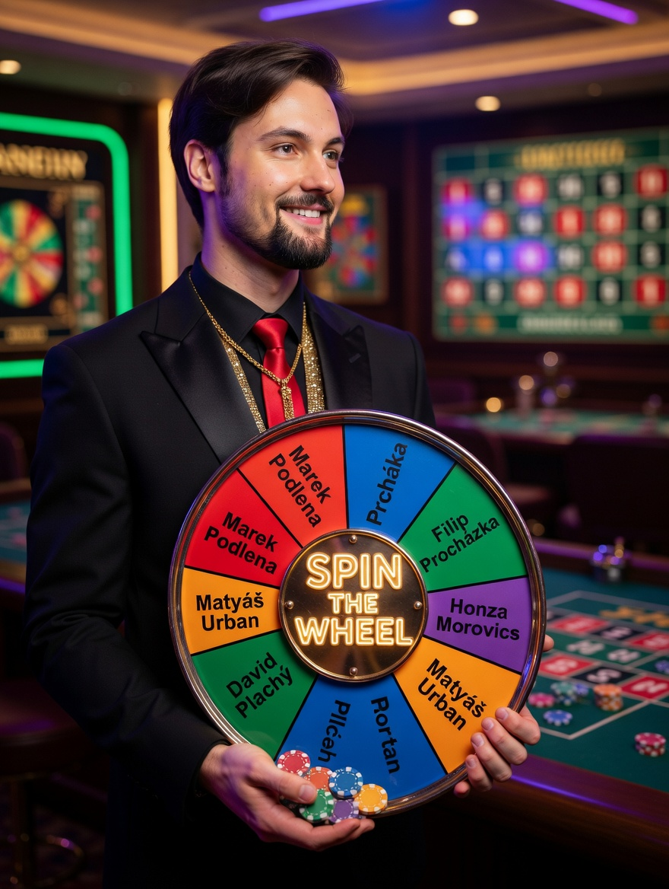
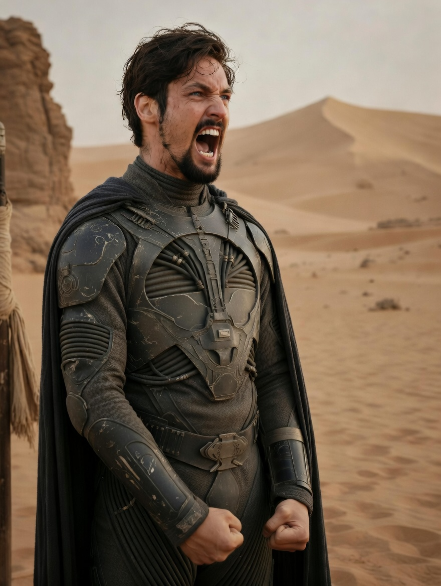
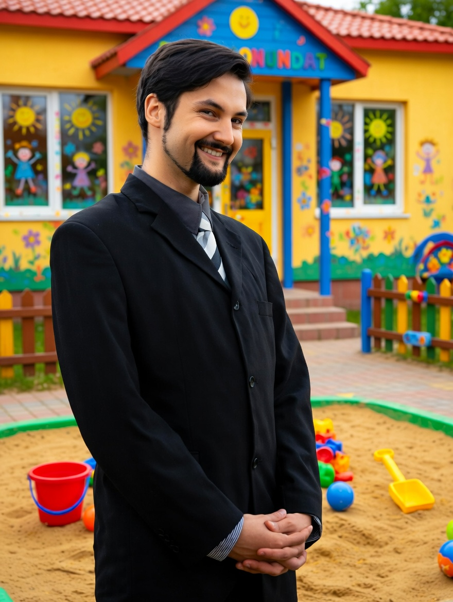

Vojtěch upisující se Bethesdě za Elder Scrolls 6

Vojtěch na jeho prvním Prague Pride
Vojtěch po zmlácení typických obyvatel Černého mostu (odstín jejich pleti připomínal barvu #000000)
Vojtěch když přijde na gambling

Leaked fotografie tetování pana učitele
Jak se Jelen cítí když zařve "Quieeeeeeeeeeeet"

Vojtěch Jelen spatřen v blízkosti lokální školky

Vojtěch kdyby svět nebyl tak krutý
The Goats
Jelenův sen